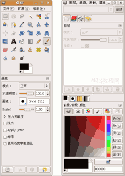
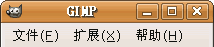
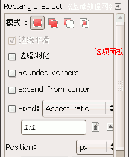
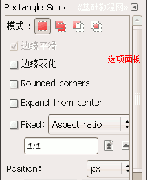
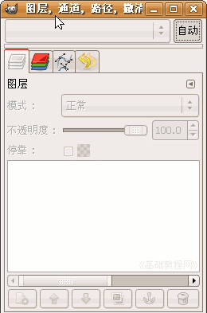
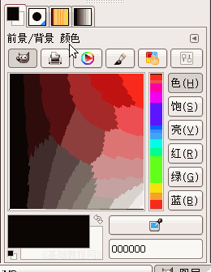
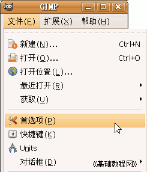
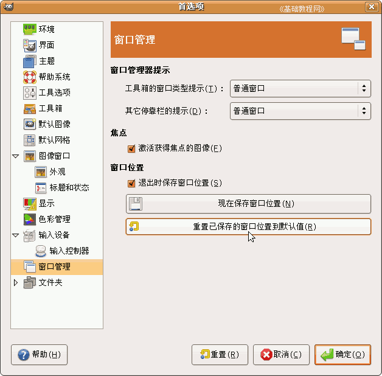

GIMP操作基础教程
作者：Teliute 来源：基础教程网
二、窗口和设置 返回目录
GIMP是一个免费的GNU图像处理软件，它的窗口分为两个独立的面板，一个是工具箱、一个是对话框面板，下面我们来看一个练习；
1、启动GIMP
1）点上面板栏的菜单“应用程序－图像－GIMP图片编辑器”，就可以启动GIMP程序；
2）程序启动完成后，出来两个长条面板，如果还有一个“日积月累”面板，可以去掉下面的勾，点“关闭”；

2、GIMP窗口
1）下面我们来看这两个面板，左边的是工具箱“主面板”，右边的是图层等“对话框”面板；

2）工具箱面面板是主程序面板，从上到下包括菜单栏、工具箱、选项三部分；
  

3）菜单里面“文件”菜单经常用到，里面的新建、保存、获取要记住，
工具箱里面都是常用的绘图工具，常用的有选择、文字、画笔等工具，
选项里面是工具的细节设置，像文字大小、颜色等等；
4）右边的长面板条包括两部分，上面是图层面板，下面是颜色面板；
 5）图层面板中放置不同的图像层，颜色中可以为图像选择一种颜色；
2、设置
1）使用一段时间后，可能把原来的窗口给改了，这时候可以在选项里恢复到原来的样子；
2）点菜单“文件－首选项”出来一个选项面板；

3）在面板的左下角找到“窗口”，点击选中，然后在右边的两个长按钮中，点击下面的“重置已保存的窗口位置”，
然后点“确定”按钮，就可以回到开始的样子了；

本节学习了GIMP的窗口和选项设置的 基本方法，如果你成功地完成了练习，请继续学习下一课内容；本教程由86团学校TeliuTe制作|著作权所有，商业用途请与作者联系
基础教程网：http://www.laxjyj.com/teliute/
美丽的校园……
转载和引用本站内容，请保留版权信息和本站链接。